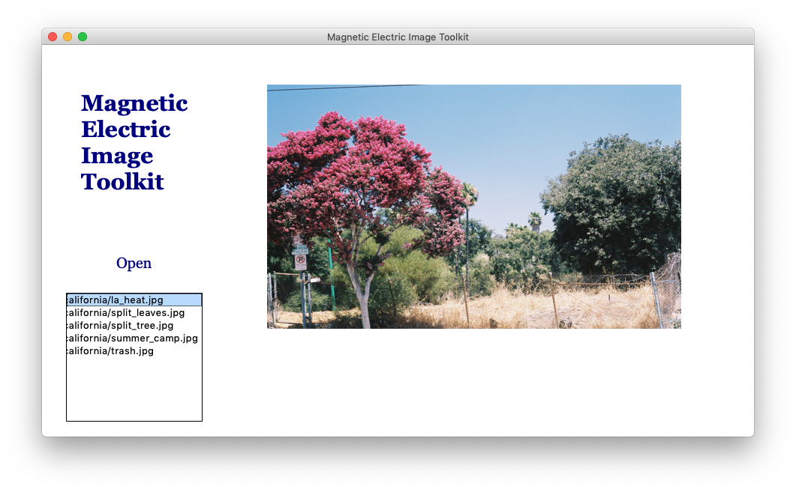
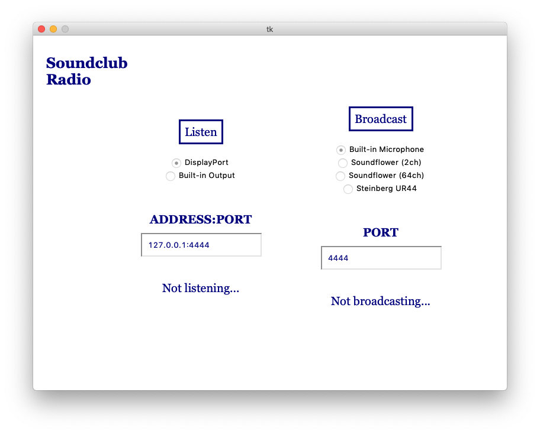

tkinter is a python library to create GUIs (graphical user interfaces).
This can be used to pull applications out of the command line and into a program with a "face".
The entirety of the code on this site is for python3 (python2, python who?)
Some examples of interfaces we've created with tkinter:
Photo Viewer
A Peer-to-Peer Radio Service

NB: We can use tkinter to create all sorts of programs, but note that it isn't intended for game development.